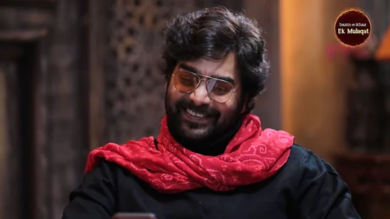

Anand Mahindra took to Twitter to share Ashutosh Rana's moving poem on childhood, and as expected, it is going viral online.
Ashutosh Rana is one gem of a person who knows the art of penning pain to bring out hard-hitting poems. And for the very same reason, his poems often go viral on social media platforms. Turns out, Ashutosh has now impressed industrialist Anand Mahindra who shared his poem on his official Twitter handle with a heartfelt caption.
"The innocence of childhood prevents us from understanding the value of that wonderful time…," tweeted Anand Mahindra with the video. The video shows Ashutosh Rana reciting a moving poem on childhood, and it is bound to evoke powerful emotions in you. His poem talks about how nostalgic one gets about their childhood while feeling lonely or dealing with life's problems. The clip is taken from the fifteenth episode of Ek Mulaqat, a series from Bazm-e-Khas, anchored by Aalok Shrivastav.
The video was shared a day ago, and it has since raked up more than 1.1 million views, and the numbers are still increasing. The share has also received several reactions from people, including Ashutosh Rana himself.